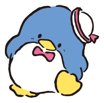

|  | Tuxedo Sam (タキシードサム, Takishīdosamu ) adalah seekor penguin muda necis dari Pulau Tuxedo di Antartika. Dia makan berlebihan dan membuat beberapa keputusan yang canggung. Dia memiliki total 365 dasi kupu-kupu. Dia berasal dari keluarga terpandang dan kuliah di universitas di Inggris. Dia juga bisa berbahasa Inggris dengan sangat baik. Sam berwarna biru, ukuran tubuhnya lingkar dada, pinggang, dan pinggul 100 cm, serta terlihat dasi kupu-kupu merah, di bawah paruh. Sam memiliki dua adik laki-laki bernama Pam dan Tam yang merupakan kembarannya. Orang kepercayaan terdekat Sam adalah Chip , anak anjing laut yang cerdas. |
| Informasi Lebih Lengkap Bisa Kamu Baca Disini!૮₍˶ᵔ ᵕ ᵔ˶₎ა |